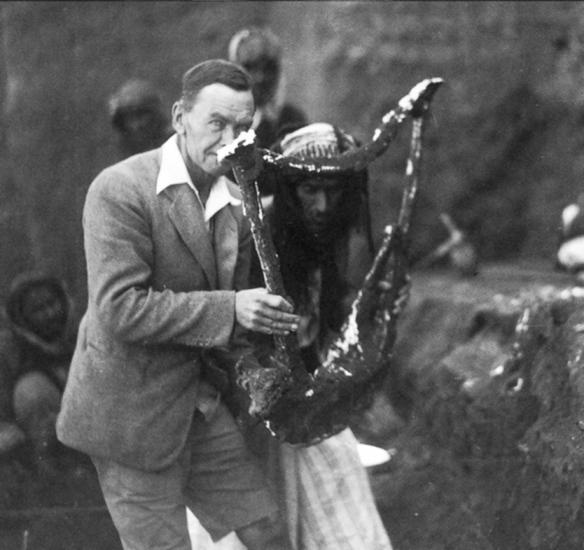

Leonard Woolley
By: Melanie Sprinkle
Early Life and Biography
Sir Charles Leonard Woolley was born on April 17, 1880. He was the son of clergyman Reverend George Herbert and Sarah Woolley. He had multiple siblings, including warman Geoffrey Harold who was the first officer of the Territorial Force to win the Victoria Cross. He was also brother to famous ethnographer and colonial administrator, George Cathcart Woolley. Leonard Woolley was born at 13 Southwold Road, Upper Clapton, in the modern London Borough of Hackney. He was able to study at St. John's School in Leatherhead, a town in Surrey, England because of the academic scholarships he won. Although he expressed interest in excavations early on, Woolley went on in his studies in New College, Oxford, graduating with an honors degree in theology (Mallowan 25).
Much of Sir Leonard Woolley's childhood was spent in a parish in Bethnal Green. He was intrigued by the paintings at an early age as he became familiar with popular European artists and paintings, otherwise known as Old Masters. Woolley was a regular at the Whitechapel Art Galleries providing him with a distinct taste in paintings that was to follow his artistic style throughout his life.
Woolley was married to Katharine Elizabeth Keeling who was born in England and had been previously married to Lieutenant Colonial Bertram Francis Eardley Keeling. He passed on February 20th, 1960 at age 79 (Mallowan 26).
Career
Woolley's post-graduation journey led him to France and Germany with hopes to study modern languages. At only 25 years old, Woolley became an assistant of the Ashmolean Museum of Art and Archaeology in Oxford which, notably, was the world's first University Museum. He was supervised by and assisted to Sir Arthur Evans who, in 1884, was Keeper of the Ashmolean Museum and transformed it into an archaeological museum and a research institution (Mallowan 25). . After serving a significant apprenticeship, Woolley dedicated his focus entirely to the field of archaeology.
In 1907, Woolley began work in the Near East when he excavated in Nubia, a region along the Nile River in southern Egypt. He was partners with Randall MacIver, a respectable scholar and Field Director of the Eckley B. Coxe, Jr. Nubian Expedition of the University Museum. MacIver was a significant influence in Woolley's life, for it was he who aided Woolley in learning to excavate in a structured way. This careful record keeping and methodical reconstruction of ancient life and history deemed Woolley as one of the first "modern" archaeologists. He excavated in a provincial capital of the Meroitic civilization called Karanog . At this site, Woolley dug up the first big Meroitic cemetary on record. Despite this significant finding Woolley stated, "the whole Meroitic civilization was but a backwater, remarkable as an isolated phenomenon in African history, but contributing nothing to the general stream of culture and of art" (Mallowan 26). Recalling his early appeal towards the art style that he was attracted to early in his life, Woolley was not satisfied by these excavations. He then uncovered artifacts in areas between Korosko and Halfa . Contrary to the record keeping skills that Woolley learned previously, in the new sites he gained valuable experience in handling problems in the archaeological field. The field of discovery that he gained knowledge from included content from the Early Dynasty down to the Roman times. After his quest in the Egypt/Sudan area, Woolley moved on to explore Italy where he completed his training as a field archaeologist. In Italy, the archaeologist spent his time in Teano, a town of Campania Italy, where he unearthed statues of Cupid, Venus, and a mask, in descending order of their value. The Museum was supposed to receive the most valuable pieces there; however, the Italian government intervened and reserved the Cupid for its museum while only allowing issues of export papers for the less worthy items. During his adventures in Naples, Woolley found time to purchase the Pozzuoli marble from Italian architect and urban planner, Lamont Young. The piece was found during the construction of a house in Pozzuoli and raised concerns about the usage of money provided for the expedition ("Leonard Woolley Expedition to Italy") . After his Italian escapade, Woolley had plans to venture at a former province of Libya; however, it was interrupted because of the 1911 Turco-Italian war.
Leonard Woolley in Carchemish.
In 1912, Woolley was given the honor to succeed Dr. R. Campbell-Thompson as leader of the British Museum where he worked with influential British archaeologist Lawrence of Arabia, otherwise known as Thomas Edward Lawrence (Anderson) . The museum was running an expedition to Carchemish to excavate discoveries from the Hittite time period. The team explored temples and palaces focusing particularly on a series of orthostats, or standing slabs that form part of a structure in the ground. The orthostats were detailed with carvings of hieroglyphic inscriptions, north Syrian gods and rulers, and the layout of the town defenses which were considered as influential contributions to knowledge at the time (Mallowan 26) . Continuing to build on his archaeological background even on his off season, Woolley and Lawrence seized the opportunity to make a survey in Palestine. In a little more than six weeks, from January to February, the group mapped the land that stretched from the southern end of the Dead Sea down to north Akaba. For the small frame of time that the archaeologists spent in the survey, they were able to acquire a broad knowledge of the area. Woolley and Lawrence acquired enough information to publish a book, The Wilderness of Zin (1915) in which they dedicated to Captain S. F. Newcombe, R.E. because he showed them “the way wherein they must walk, and the work that they must do” (The Wildernes of Zin 6). Woolley studied and reported the climatic conditions in the past state, the routes from Palestine to Egypt in the Biblical era, and how the Byzantine Government was able to cross over the whole settled civilization despite the conditions of the soil and climate.
World War I Conflict
As World War I escalated in 1914, the excavation at Carchemish was interrupted. Woolley was bombed at sea off the coast of south Asia and shortly after spent the remainder of the war in a Turkish prison camp. Even as a prisoner of war, Woolley utilized his keen observation skills which led him to be one of the testified subjects in the book, From Kastamuni to Kedos: Being A Record of Experiences of Prisoners of War in Turkey, (1916-1917). The piece was published in 1921 by Woolley’s family friend, Basil Blackwell and later edited by Woolley himself. The book was a personal collection of reactions and thoughts from Woolley and other prisoners (Mairs and Muratov) .
Post World War I in 1919, Woolley decided to end the dig at Carchemish because of its location in no-man’s land between the French army and Kurdish irregulars. He took a detour to Egypt and worked for the Egypt Exploration Fund where he lived in a house once occupied by ancient craftsmen on the site of Tell-el-Amarna.
Woolley's Work in Ur
Only a couple of years after Woolley concluded his work in Carchemish, he moved onto a greater project at Ur in Mesopotamia. The archaeologist’s accomplishments at this site built Woolley’s notable reputation. In 1922, he dug for thirteen years focusing on the Temenos, a sacred area home to major temples and palaces. Through intense record keeping and analysis, Woolley uncovered the sequence of cities that rose sometime in the fifth millennium B.C (also known as the Al ‘Ubaid period). The cities were established on water-logged soil that grew over each other to form a 70 foot tall mound. Some of the earliest literature known to man were uncovered by Woolley in the process; however, there was a great plethora of them that the publications would take many years to be completed. Archaeologists are particularly concerned about the documents because they can learn more about the buildings and small remains related to them (Mallowan 26).
Sir Leonard Woolley uncovered sculptures and more decorative artifacts following the documents. One of the artifacts included small statuettes called “Ram Caught in a Thicket”. Woolley named the statue because it refers to the biblical story of Abraham sacrificing a ram; however, it actually portrays a markhor goat eating the leaves of a tree. He uncovered two of them; one is currently in the British Museum, and the other is at the Penn Museum. Only a little of the Ram survived during the excavation resulting in Woolley’s reconstruction of the figurines. While doing so, he miscalculated the height of the Ram and placed the tree too low into the base which made the Ram’s legs dangle above the tree’s branches. Woolley acquired a vast knowledge on excavations such as learning how to pour wax on the Ram and using the waxed muslin strips to stabilize it ("Ram Caught in a Thicket"). Woolley also excavated a copper bull in the Ur site.

Queen Puabi’s remains were uncovered by Woolley in Ur in the Great Death Pit around 2500 BCE. The forensic examination of her remains revealed that she was about 40 years old when she died and stood under five feet tall. Queen Puabi was surrounded by burial objects such as her cosmetics. One in particular was a semicircular object that contained black pigment used to highlight her eyes. The name on the cylinder, Abarage, was rather significant to Woolley because he believed it to be the Queen’s husband ("Queen Puabi").
Post Ur Excavation
After the excitement of the Ur digs, Sir Leonard Woolley went on to explore Al Mina. At this site, he revealed discoveries involving the import and export of trade between Aegean and Syria. Similar to the sites in Ur, Woolley uncovered more documents pertaining to the palaces, temples, sculpture, and pottery of the second millennium B.C. It was in 1938 when Woolley accepted an invitation from the Government of India to provide advice for their archaeology programs. His reputation gained respect, for he was looked upon greatly here. After leaving the country with quality recommendations on promising sites and areas of exploration, he served as a major in the Directorate of Public Relations and took on the responsibility of building monuments, fine arts, and archives branch of Civil Affairs. The purpose was to provide protection to the ancient monuments, works of art, libraries, and collections of archives during the war. He was deemed fit for this position because of his imagination and organizational skills. This task lasted from 1939-1943, and afterwards he became Lieutenant-Colonel G.S. Archaeological Adviser to the Civil Affairs Directorate in Italy (1943-1946). As WWII progressed, and Italy became a battlefield, Woolley was able to keep valuable items from the Pitti, the Uffizi, and other Florentine galleries safe from destruction.
Acknowledgements and Major Contributions to Archaeology
Regardless of his chronological criticisms, Woolley is admired for his fluent style of imaginative writing on his discoveries. Professor Mallowan writes, “To follow Woolley round the site at Ur and to hear him talk about the private houses was to feel oneself living among the vanished people. If his imagination sometimes outran the facts, this to him was preferable to allowing knowledge to lie dormant and inconclusive,” (27). Woolley also excelled at composing easy to read works for an audience that does not specialize in archaeology especially in his book, Excavations at Ur, a Record of Twelve Years Work (1954), which details a summary account of his achievements. Woolley’s most important archaeological work occurred at Ur with the excavation and findings from the Royal Cemetery. It is significant to note all of the time spent and artifacts collected during his fieldwork as well as the fact that Woolley left nothing unwritten. Along with his creative writing, Woolley was admired for his studious work ethic. During his excavations he would stay up until two or three in the morning, working in his study or the catalogue room. After less than adequate hours of sleep, Woolley woke early with the sun to get a full day of digging in.
Criticisms
Despite the achievement of discovering plentiful documents and artifacts, Woolley found his academic work suffering particularly when exporting a chronology of the items. There is doubt circulating the validity of the dates associated with the Royal Cemetery in Ur and also at Carchemish. The Royal Cemetery was dated several centuries too early, and there are also some people who reject the sequence of dating in Carchemish (Mallowan 27). This brings uncertainty to other scholars regarding his other work including a report titled Excavations at Archana-Alalakh in which Woolley wrote a detailed account of a later excavation. Because of the skepticism of his prior work, the chronology enveloped in the novel was not usually accepted.
Legacy
In 1955, Sir Leonard Woolley was the recipient of the University Museum’s Lucy Wharton Drexel Medal for archaeology. His legacy as one of the first modern archaeologists will live on through his expository writing. The discoveries at Ur are some of the best preserved of all from the historical period. The artifacts that he found were divided between multiple locations: the British Museum in London, the University of Pennsylvania Museum in Philadelphia in Pennsylvania, and the National Museum in Baghdad in Iraq. Many of the pieces from Queen Puabi’s site have been viewed notoriously in the Art and History Museum tour through the United Kingdom and America. His works were influential so much that author Agatha Christie wrote about him and the discoveries of the tombs in her novel, Murder in Mesopotamia (Thomas). With fourteen publications, Woolley leaves behind detailed written accounts of his numerous excavations.
Sir Leonard Woolley was one of the first to propose the Local Genesis Flood Theory leaving a lasting impression for many successors. During his discovery in Ur, he noticed that the pottery that was dug up remained unchanged as they went further and further into the ground. He found a clay layer that could only be deposited by water. He came to the conclusion that there was only one possible explanation for the massive clay deposit beneath the hill at Ur: the Flood of Noah (Keyser).
Works Cited
Anderson, Scott. "The True Story of Lawrence of Arabia." Smithsonian. Smithsonian Museum, July 2014. Web. 02 May 2016. ttp://www.smithsonianmag.com/history/true-story-lawrence-arabia-180951857/?no-ist.
Keyser, John D. "Did Noah's Flood Cover the Highest Mountains?" Hope of Israel Ministries. N.p., n.d. Web. 02 May 2016. http://www.hope-of-israel.org/flood.html.
Mairs, Rachel, and Maya Muratov. Archaeologists, Tourists, Interpreters. N.p.: n.p., n.d. Google Books. 24 Sept. 2015. Web. 02 May 2016. https://books.google.com/books?id=M8HNCQAAQBAJ&pg=PT64&dq=leonard+woolley+prison+camp&hl=en&sa=X&ved=0ahUKEwiwurvopbnMAhVK7iYKHTElAk8Q6AEIIjAB#v=onepage&q=leonard woolley prison camp&f=false.
Mallowan, .M.E.L."Sir Leonard Woolley" Expedition Magazine 3.1 (September 1960): n. pag. Expedition Magazine. Penn Museum, September 1960 Web. 02 May 2016. http://www.penn.museum/sites/expedition/?p=571.
"Queen Puabi." Queen Puabi. Penn Museum, n.d. Web. 02 May 2016.http://www.penn.museum/sites/iraq/?page_id=28.
"Ram Caught in a Thicket." Ram Caught in a Thicket. Penn Museum, n.d. Web. 02 May 2016. http://www.penn.museum/sites/iraq/?page_id=63.
Thomas, G. W. "Murder in Mesopotamia: Agatha Christie and Archaeology." Murder by Six. Rage Machine Books, n.d. Web. 2 May 2016. http://www.gwthomas.org/murderinmeso.html.
Woolley, Leonard. "Leonard Woolley Expedition to Italy." University of Pennsylvania Libraries Finding Aids. University of Pennsylvania, n.d. Web. 2 May 2016. http%3A%2F%2Fdla.library.upenn.edu%2Fcocoon%2Fdla%2Fead%2Fead.html%3Ffq%3Ddate_facet%253A%25221900s%2522%2520AND%2520creator_facet%253A%2522Wooley%252C%2520C.%2520Leonard%252C%2520Sir%252C%2520b.%25201880-d.1960%2522%26id%3DEAD_upenn_museum_PUMu1160%26.
Woolley, Leonard, T. E. Lawrence, and Marcus Niebuhr Tod. The Wilderness of Zin. New York: C. Scribner's Sons, 1936. University of Chicago Libraries. Web. 2 May 2016. http://www.lib.uchicago.edu/cgi-bin/eos/eos_page.pl?DPI=100&callnum=DS111.A1P28_vol3_cop1&object=0.
Images
Leonard Woolley and T.E. Lawrence. Digital image. WikiMedia Commons. N.p., 1914. Web. 4 May 2016. https://commons.wikimedia.org/wiki/File:Woolley_%26_Lawrence_at_Carchemish.jpg.
Leonard Woolley. Digital image. WikiMedia. N.p., 25 Mar. 2007. Web. 1 May 2016. https://commons.wikimedia.org/wiki/File:Woolley_holding_the_hardened_plaster_mold_of_a_lyre.jpg.
Muhammed, Osama Shukir. Copper Bull Head from Queen Puabi. Digital image. WikiMedia Commons. N.p., 29 Jan. 2014. Web. 4 May 2016. https://commons.wikimedia.org/wiki/File:Bull%27s_head_of_the_Queen%27s_lyre_from_Pu-abi%27s_grave_PG_800,_the_Royal_Cemetery_at_Ur,_Southern_Mesopotamia,_Iraq._The_British_Museum,_London..JPG.